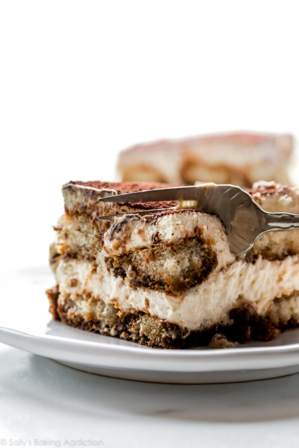

Tiramisu
Tiramisu is niet alleen heerlijk, het is ook heel licht. Perfect voor na een stevige maaltijd.
Ingrediënten
· 6 eieren
· 1 kop suiker
· 1-1/4 kop mascarpone kaas(op kamertemperatuur)
· 1-3/4 kop houdbare slagroom
· 2-7 onz. pak Lange vingers
· 1 kop koude espresso
· 1/2 kop koffielikeur (optioneel)
· 1 onz. ongezoet cacao poeder
Bereidingswijze
1. Combineer 6 eigelen en suiker metalen pot, over kokend water.
Zet het fornuis op laag en kook voor ongeveer 10 minuten, blijf voortdurend roeren.
Dit is een sabayon, zet het fornuis uit en roer de eigelen tot ze dik
zijn en geel van kleur. Laat kort koelen voor het mixen met de mascarpone.
2. Voeg mascarpone toe aan de eigelen, sla tot ze combineren.
3. Klop in een aparte kom met behulp van een elektrische mixer slagroom om pieken te verstijven.
(handmixer of keukenmixer is prima)
4. Vouw de slagroom voorzichtig in het mascarpone sabayon-mengsel en zet opzij.
De Mascarpone hoeft niet op kamer temperatuur te zijn, maar het zal wel helpen om
gemakkelijker te mengen als dat zo is. Haal het uit de koelkast terwijl je
Ingrediënten verzamelt om het recept te maken.
5. Meng de koude espresso met de koffielikeur en dompel de lange vingers net lange
genoeg in het mengsel om ze nat te maken, laat ze niet weken.
6. Leg de lange vingers op de bodem van een 9-inch vierkante ovenschaal. (of container met vergelijkbare grootte)
7. Schep de helft van de mascarpone-crème over de vingers.
8. Herhaal het proces met nog een laag lange vingers.
9. Voeg nog een laag tiramisu-room toe.
10. Koel minimaal 4 uur. Overnachten is het beste.
11. Bestrooi met cacao voor opdienen.

Tip: Perfect met een extra laag cacao poeder en een bolletje ijs.